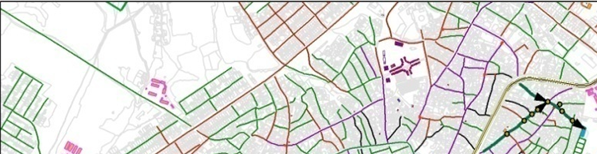
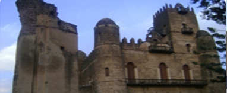
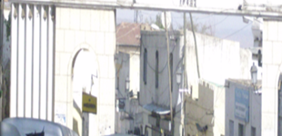

Debre Birhan Asset Inventory and Asset Management Plan (AMP) preparation
This project provides a comprehensive framework for urban development by establishing a robust Municipal Asset Management Plan. By progressing from the initial categorization and inventory of infrastructure to high-level geodatabase mapping and financial valuation, the initiative ensures that every city asset is accounted for and professionally assessed. The core of the service involves bridging the gap between current asset conditions and future strategic goals through detailed maintenance budgeting, three-year investment planning, and a clear implementation strategy. Ultimately, this structured approach enables the city administration to make data-driven decisions on infrastructure investments, optimize maintenance costs, and ensure the long-term sustainability of municipal services.

Gondar City Asset Inventory and Asset Management Plan (AMP) preparation
The undertaken methodology for the project establishes a circular, data-driven lifecycle for managing city infrastructure, beginning with the creation of a digital GIS-based foundation and an institutional framework. The process moves through a rigorous "audit phase"—compiling an exhaustive asset inventory and assessing physical conditions—before transitioning into financial planning, where replacement costs and maintenance deficits are calculated. By converting these insights into a prioritized three-year rolling program, the framework ensures that new construction and repairs are not just reactive, but strategically planned. The cycle concludes with a vital feedback loop: as projects are completed, they are integrated back into the master database, ensuring that the system evolves into a permanent, transparent, and sustainable tool for urban governance.
Kombolcha City Asset Inventory and Asset Management Plan (AMP) preparation
This project establishes a comprehensive lifecycle for municipal asset management, bridging the gap between technical data collection and long-term financial planning. By integrating GIS technology with institutional oversight and a 3-year rolling budget, the framework ensures that infrastructure is not only inventoried and valued but also systematically maintained. Ultimately, the project creates a self-sustaining loop where new works and maintenance updates are continuously fed back into the central database, providing a transparent and organized roadmap for urban sustainability.

Harer City Land Inventory, File Reorganization and Adjudication
This project establishes a robust framework for modernizing urban land administration by integrating advanced geospatial mapping with a streamlined digital database. By systematically identifying legal land holdings, categorizing urban land use, and reorganizing archival records into an automated management system, the initiative provides the city administration with the precise data needed for informed, rational decision-making. Ultimately, through the combination of rigorous technical analysis, professional capacity building, and the development of clear implementation strategies, this project ensures a transparent and efficient land holding system that is equipped to support sustainable urban growth and improved service delivery for its residents.
Addis Ababa Sidewalk Safety and Design Improvement Plan
Addresses sidewalk safety for pedestrians and improving transport safety for the largest group of transport users. It also raise awareness and build analytics on unsafe walking conditions to connect pedestrians, sidewalks, urban design and road safety, and form a truly multimodal integrated approach to road safety and urban design. It identifies strategies and formulates particular actions and creates framework for safe infrastructure design and promote public health and human capital development.